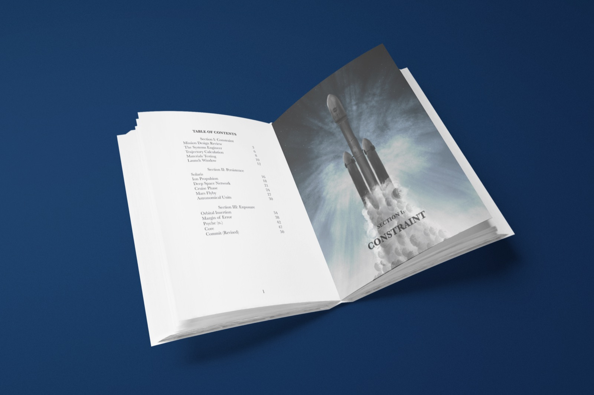
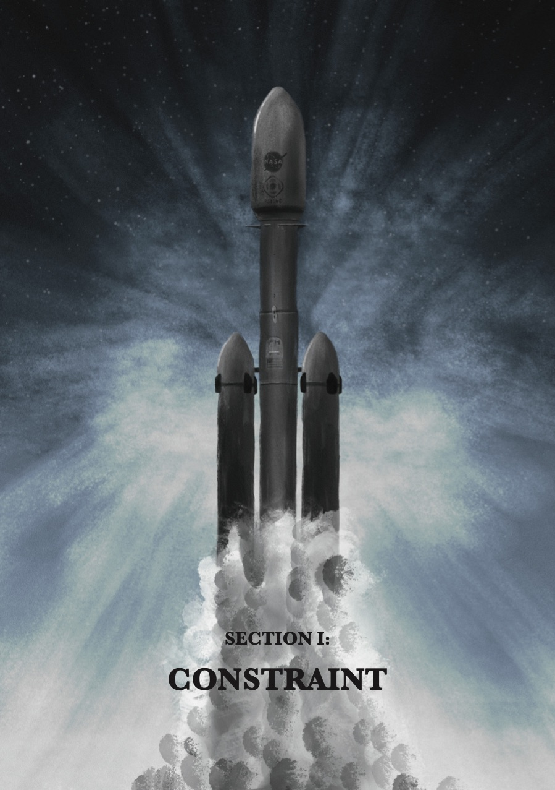
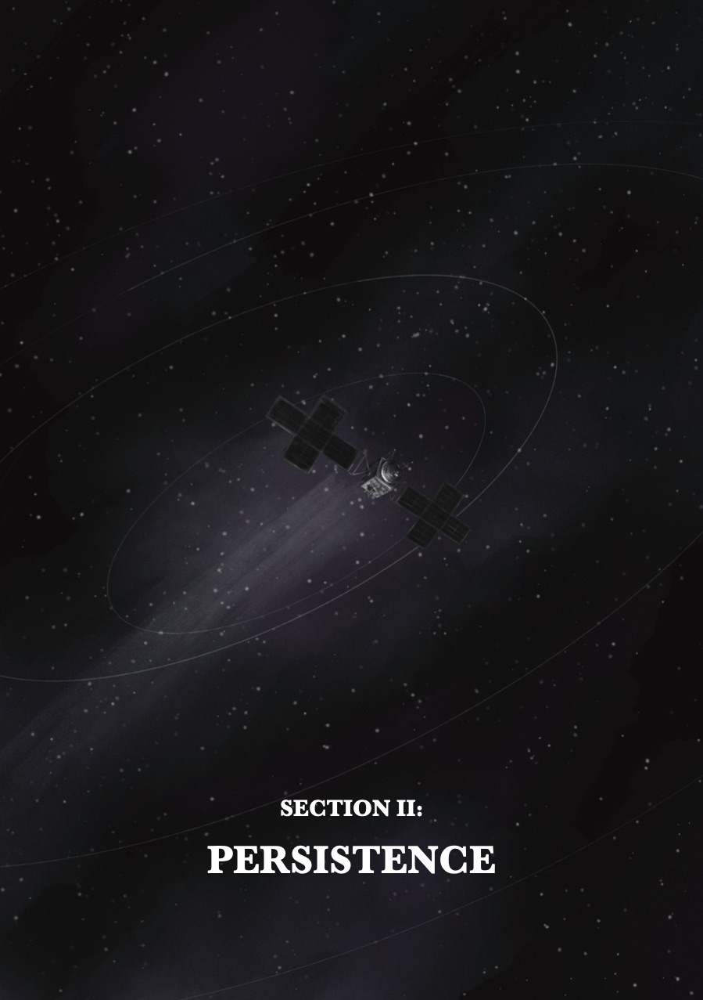
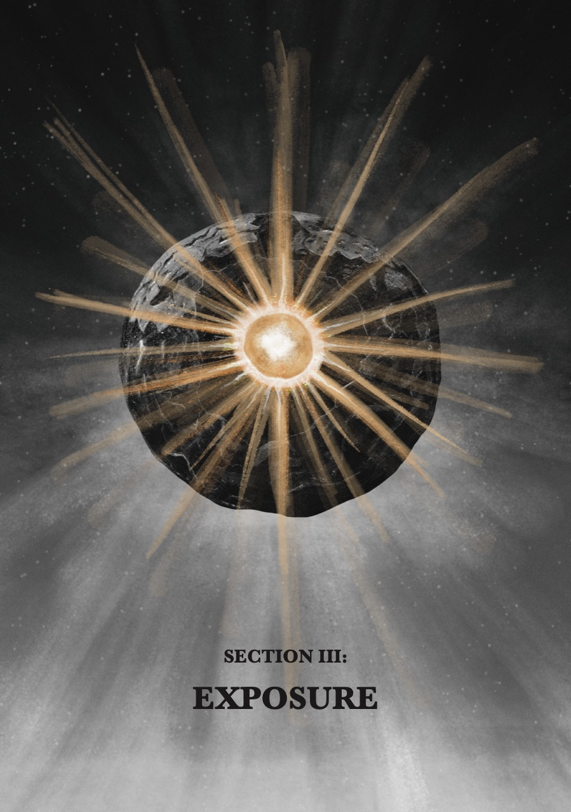
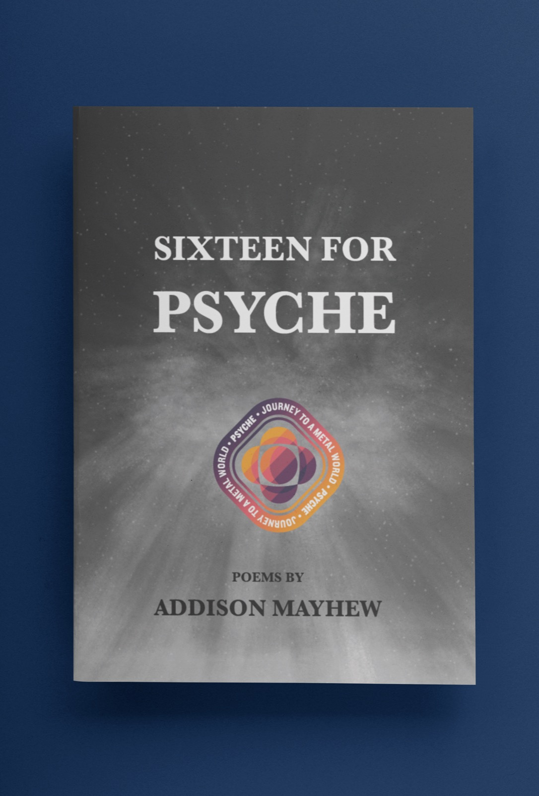
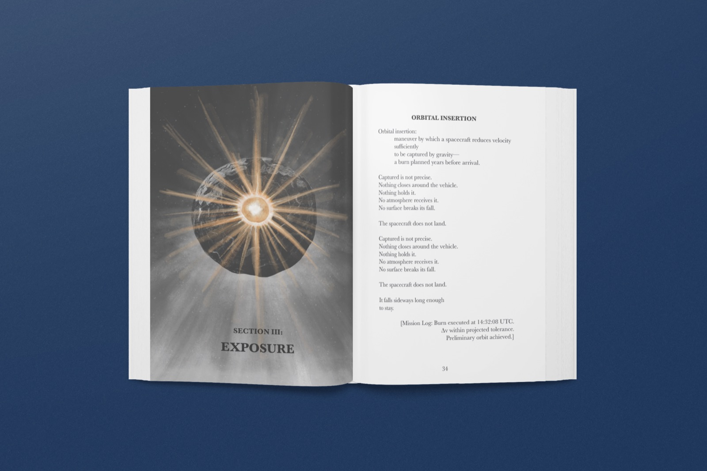

Poetry · Book · NASA Psyche Inspired
Sixteen
for Psyche
A poetry collection structured around the phases of NASA’s Psyche mission, tracing a progression from engineering design to interplanetary travel to orbital encounter.

01
Overview
The work draws from the language of systems engineering, trajectory analysis, and mission operations, using procedural and technical vocabulary as both structure and subject.
Although individuals are not named within the poems, human presence is central to the work. Every calculation, tolerance, and decision originates from teams of engineers, scientists, and operators whose labor makes the mission possible. The procedural language throughout the collection functions as a record of that collective effort—structured, iterative, and precise. Repeated phrases such as “we attempt the core” reflect a shared voice rather than a singular one.
02
Structure
The collection is divided into three sections—Constraint, Persistence, and Exposure—each reflecting a phase of the mission and a corresponding shift in poetic form. In Constraint, highly structured poems mirror the rigor of design reviews, testing, and launch preparation. In Persistence, the work transitions into free verse, reflecting the long-duration continuity of spaceflight, where motion is gradual and cumulative. In Exposure, the poems become increasingly experimental, destabilizing form and language as the spacecraft reaches Psyche.
- Mission Design ReviewThree villanelles
- The Systems EngineerPantoum
- Trajectory CalculationTerza rima
- Materials TestingSestina with envoi
- Launch WindowCountdown to “Commit.”
03
Illustration
Each section is introduced by a full-page illustration that acts as a visual anchor for the poems that follow. These images are atmospheric and symbolic rather than diagrammatic, translating the section themes into visual form: structured ascent in Constraint, sustained motion in Persistence, and radiant interior revelation in Exposure.



04
Excerpts
Mission Design Review
For the first time ever, we attempt the core. The proposal outlines projected return. The mission must conform to what we swore. Projected trajectories are reviewed once more; Each subsystem reports its calculated burn. For the first time ever, we attempt the core. Thermal margins meet the required floor; Redundant circuits wait their proper turn. The mission must conform to what we swore. No component may exceed its rated score; All vectors shift where calculations churn. For the first time ever, we attempt the core. The board requests what has been asked before— Clarified risks and documented concern. The mission must conform to what we swore. We sign beneath assumptions we restore, Knowing the numbers must continue to hold firm: For the first time ever, we attempt the core. The mission must conform to what we swore.
Ion Propulsion
An electric field accelerates what has been altered. The ions exit at velocities far beyond flame, a faint blue effusion extending into vacuum. The force produced is small, measured in fractions of a pound, insufficient to startle any observer. But there is no atmosphere to resist it. No friction to diminish accumulation. In space, persistence replaces power. What would be negligible on Earth becomes decisive over distance. The thruster continues.
Psyche (n.)
1. The mind. 2. A metallic asteroid orbiting between Mars and Jupiter. 3. Breath. 4. That which is exposed when everything else is gone. 5. (provisional) 6. subject to revision From Greek psukhē: breath, life, animating principle. Breath requires atmosphere. There is no atmosphere here. You continue. Psyche is believed to be exposed core of a protoplanet. Believed by whom. Strike believed. Replace with: modeled. Replace with: calculated by teams.
Commit (Revised)
revision issued: commit no longer means ignition commit no longer means certainty commit means remain commit means continue orbit commit means proximity sustained commit means exposure without guarantee commit means the mission continues even when the meaning does not stabilize
05
The book

